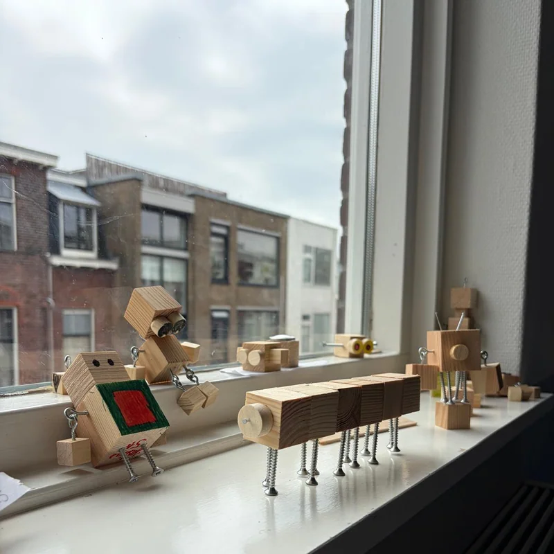
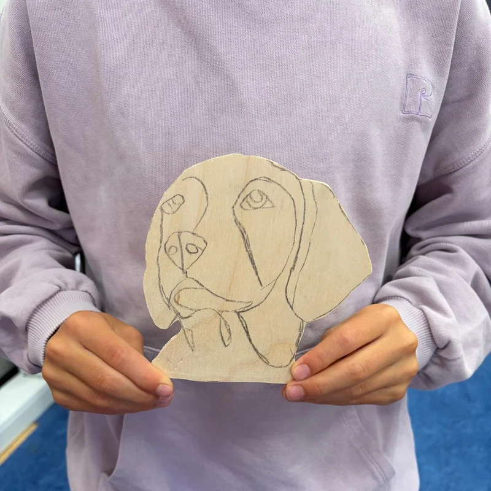
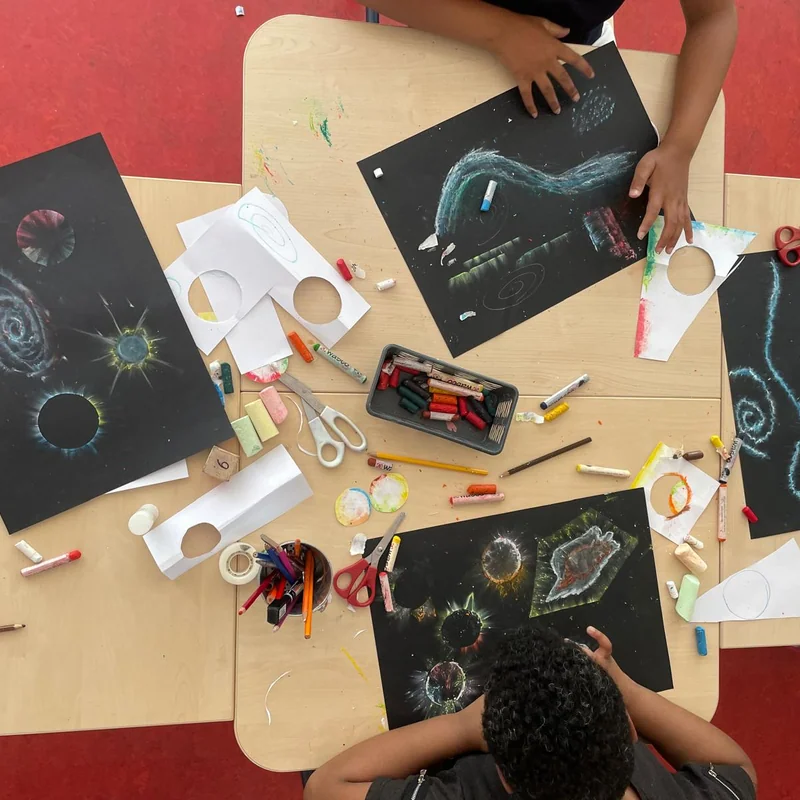
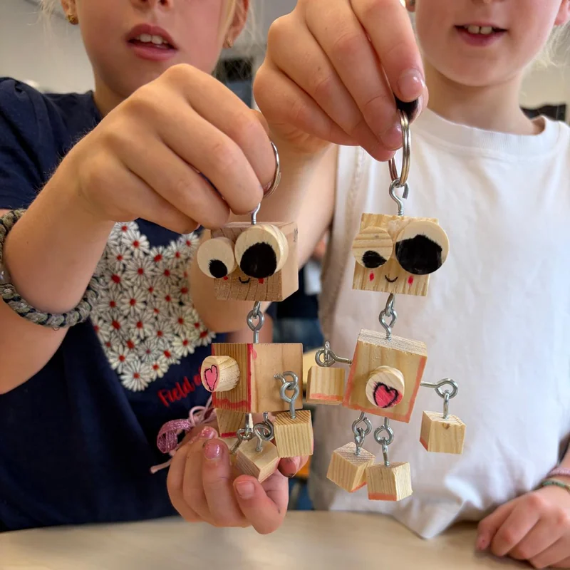
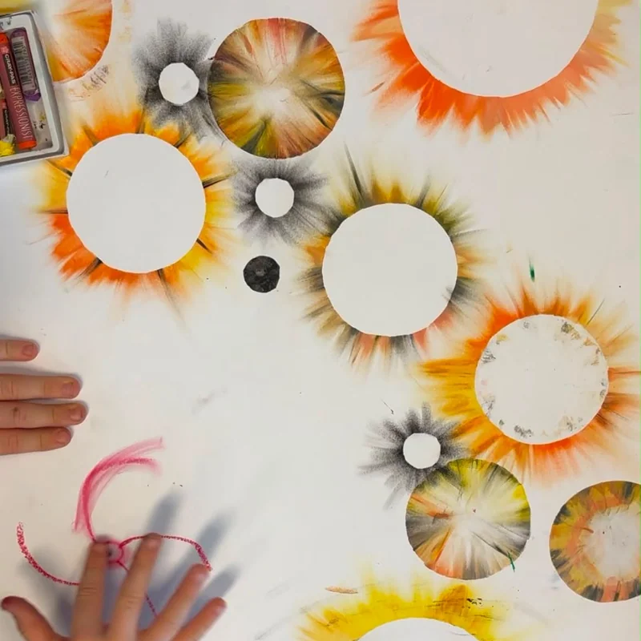
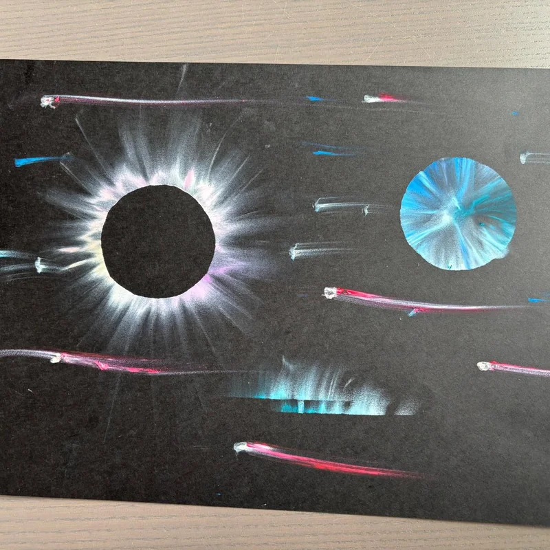
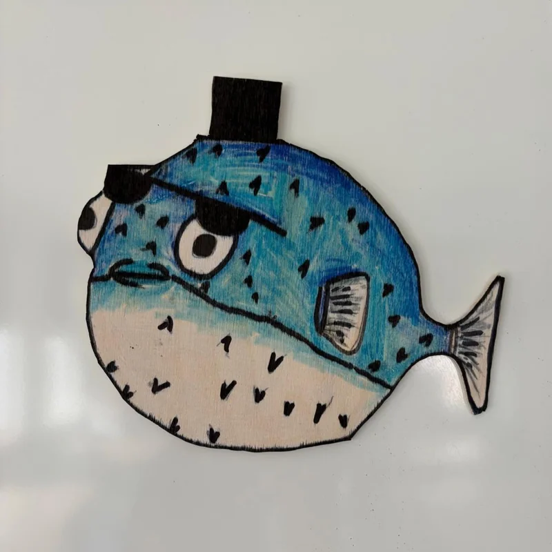

Art
Creative thinking & making
Every child has their own way of thinking and creating. They explore different materials and techniques to bring it to life in their own unique way.







Art
Creative thinking & making